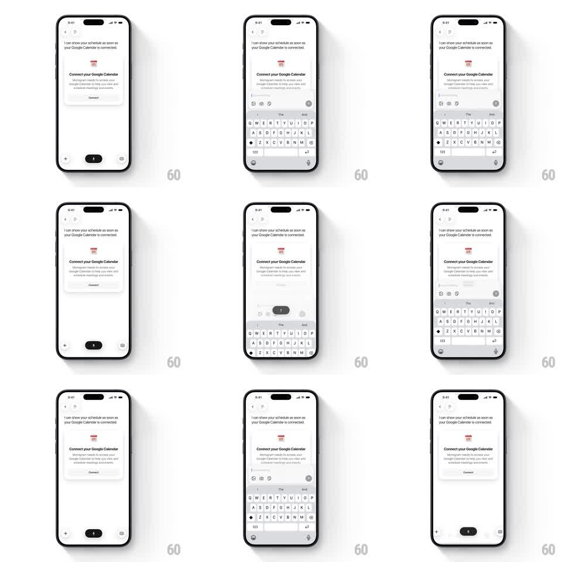

Media
Frame-by-frame

Rebuild this interaction 1:1: Monogram's input-to-bar morph - dismissing the expanded chat input and keyboard collapses the accessory icon row into the floating bottom voice-first action bar in one continuous downward morph.

Rebuild this interaction 1:1: Monogram's input-to-bar morph - dismissing the expanded chat input and keyboard collapses the accessory icon row into the floating bottom voice-first action bar in one continuous downward morph. ## Integration Integration: stack-agnostic spec - springs given as stiffness/damping, timed motions as duration + curve; map every value to your framework and animation library of choice. ## Scene Chat screen with a "Connect your Google Calendar" card in the conversation. Expanded state: a text input row sits above the system keyboard with an accessory row of icons (image, @ mention, mic) and a send button. Collapsed state: floating bottom bar with + button, dark mic pill, and grid button. ## Motion spec Pattern: keyboard dismissal where the input cluster morphs into the floating action bar. - The keyboard slides down at the system rate (~250ms). - The input field shrinks in height and width (300ms, ease-in-out) while its text and cursor fade out (150ms). - The accessory icons migrate downward and re-deal into the bar layout: image/+ lands left, mic expands into the central dark pill (width 44 -> 120px, 300ms), grid appears right - 40ms stagger between the three. - The whole cluster drops ~60px into its floating dock position with a soft spring (~260/26), no overshoot beyond 4%. - The calendar card above stays pinned; only the bottom cluster moves. ## Calibration - Read as one object re-organizing, not one bar closing and another opening - shared element continuity for the mic icon into the pill. - Keep motion synced with the keyboard so nothing floats mid-air after the keyboard is gone. ## Reduced motion Keyboard hides; input row crossfades to the bottom bar at final position (200ms). ## Don't miss - The mic icon is the anchor: it visibly grows into the dark pill. - The bar floats with a hairline shadow over the content, not a solid footer.